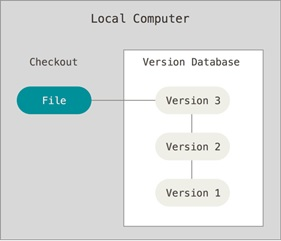
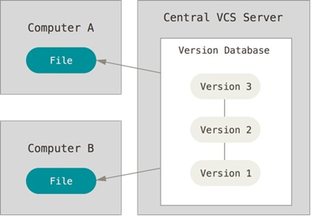

Objetivo
El objetivo general del presente Objeto Virtual de Aprendizaje (OVI) es enseñar el uso de tecnologías HTML5 y CSS3 aplicando la temática del curso Diseño de Sitios Web (código 301122), para adquirir la habilidad de desarrollar contenidos en formato web (Paginas y Sitios Web).
Temáticas del OVI:
Las principales temáticas del Curso Diseño de Sitios Web ofertado por la UNAD, por medio de la ECBTI, son las siguientes:
Mostrar los elementos a tener en cuenta en la etapa de Diseño y planeación de un Sitio Web, como el Wireframe y el uso de Git/ GitHub.
De igual manera, veremos la generalidades del lenguaje de Cascading Style Sheets y los principales elementos de este lenguaje.
Estas temáticas se presentaran por medio de diferentes artículos, con ayudas audiovisuales como videos y podcasts.
Esperamos pueda servir de ayuda para la introducción al maravilloso mundo de la programación Web.
Presentación de la Sección
La sección Definición de un Sistema de Control de Versiones, dará a conocer que es un SCV, tomando como referencia Git/ GitHub, la cual es una de las herramientas de trabajo colaborativo más populares en el campo del Desarrollo de software.
Al principio, Git se pensó como un motor de bajo nivel sobre el cual otros pudieran escribir la interfaz de usuario o front end como Cogito o StGIT.Sin embargo, Git se ha convertido desde entonces en un sistema de control de versiones con funcionalidad plena. 4 Hay algunos proyectos de mucha relevancia que ya usan Git, en particular, el grupo de programación del núcleo Linux.
El mantenimiento del software Git está actualmente (2009) supervisado por Junio Hamano, quien recibe contribuciones al código de alrededor de 280 programadores. En cuanto a derechos de autor Git es un software libre distribuible bajo los términos de la versión 2 de la Licencia Pública General de GNU.
Un Sistema de Control de versiones es una plataforma que permite manejar repositorios de proyectos de desarrollo web y/o de software en general, controlando el versionamiento del código generado, para manejar un proceso de administración mucho mas organizado. Este sistema registra que modificaciones se realizan sobre el proyecto que se está ejecutando.
Así mismo permite regresar a versiones especificas anteriores, de manera que es posible recuperar dichas versiones más adelante, cualquier tipo de archivo que encuentres en un ordenador puede ponerse bajo control de versiones.
En resumen un SCV me permite una gestión de repositorios de una forma eficaz, pudiendo sincronizar cambios y compartir repositorios.

• STORAGE: Disco duro del Servidor en la nube.
• CHANGES: Son los cambios de escritura, lectura o revertir cambios a las versiones anteriores.
• W.R.U
• DATA HISTORY: Es el historial de cada vez que se sube o sincroniza una información al repositorio.
• REPORTS: Son los reportes que muestra todas las modificaciones que ha tenido el código.
Estos SCV tienes varias arquitecturas a saber:
Sistema de Control de Versiones locales
Definición: Es aquel en el cual se crea un archivo local en un equipo de cómputo y en él se va guardando el código generando y se va versionando en diferentes archivos. El gran riegos de este sistema es sobreescribir la información erróneamente y fallos de hardware exponen a que se pierda toda la información.
En este sistema ya se cuenta con un servidor central, en cual se realizan cambios solo a la base de datos de control de versiones que está en el servidor. Todos los clientes descargan los archivos desde ese único servidor.
En este sistema no se hacen cambios sincronizados entre estaciones de trabajo, sólo al servidor.
La desventaja que presenta es que siendo un servidor centralizado, puede ser un punto único de falla

En este sistema, un cliente cualquiera puede realizar cambios al código desde su mismo equipo, o por medio de otro cliente o al servidor mismo, es decir, en cada uno de los equipos clientes y el servidor se crea una copia de todos los archivos a maneras de clones. De igual forma, cuando hay una modificación desde un cliente, el repositorio se replica en cada una de las estaciones y servidor.
Eres el visitante número: